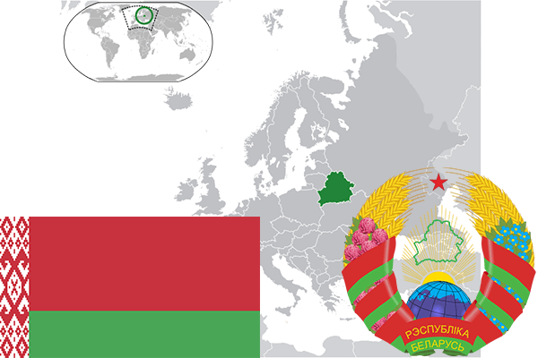

To`liq nomi: Belorus Respublikasi
Region: Sharqiy Yevropa
Qonunchilik shakli: Respublika
Mustaqillik kuni: 26-dekabr 1991 - yil Sovet ittifoqidan
Poytaxti: Minsk
Maydoni: 207600 km² (dunyoda 84 -o`rinda )
Chegaradosh davlatlari: Litva, Latviya, Rossiya, Ukraina, Polsha
Aholisi: 9505200 (dunyoda 93 -o`rinda ) 2016 -yil roʻyxat
Aholi zichligi: 45,8 /km²
Aholining o`rtacha yoshi: 70,7 yil ( 76,7 ayollar, 64,7 erkaklar)
Rasmiy tili: Rus va Belorus tillari
Dini: 80% pravoslav, 15% katolik, 5% boshqa
Pul birligi: Belorus rubli
Telefon prefiksi: +375
Internet domen: .by
Xalqaro tashkilotlarga a`zoligi: BMT (1945 -yildan), MDX, Yevrosiyo iqtisodiy ittifoqi (01.01.2015)
Dengiz va okeanlarga chiqishi: Yo`q
YIM: Butun: $ 167,7 mlrd, Jon boshiga: $ 17700 (2015 - yil roʻyxati)
Yirik shaharlari: Minsk, Gomel, Vitebsk, Mogilyev, Grondo